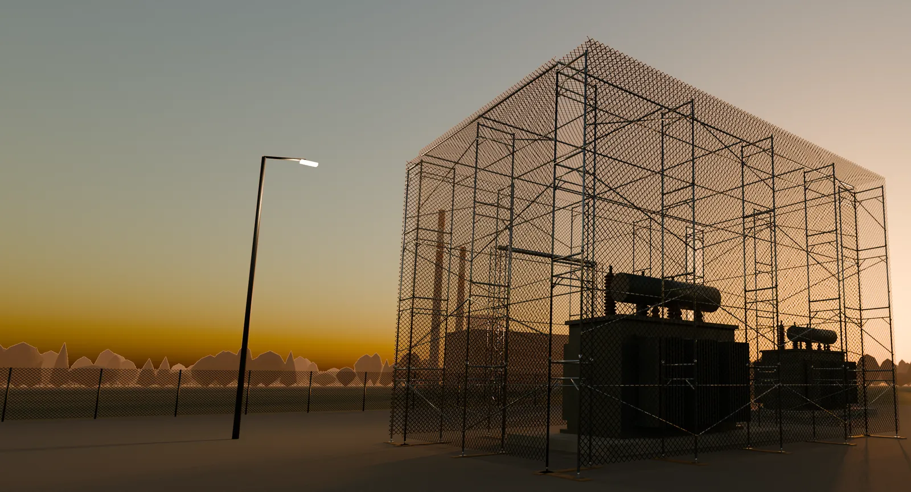
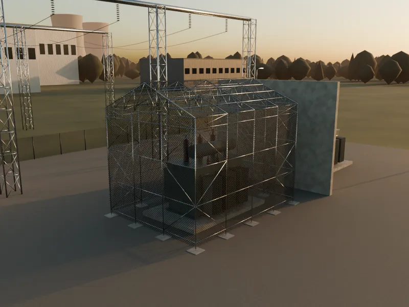
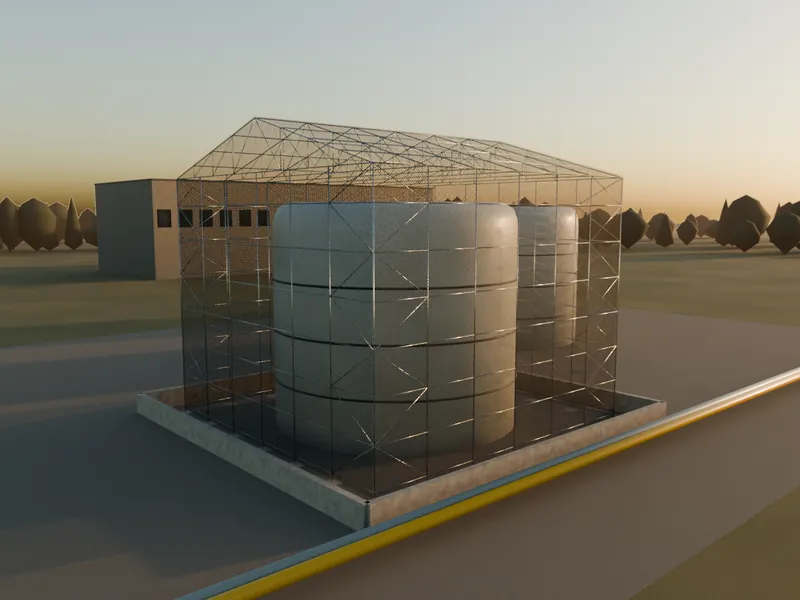
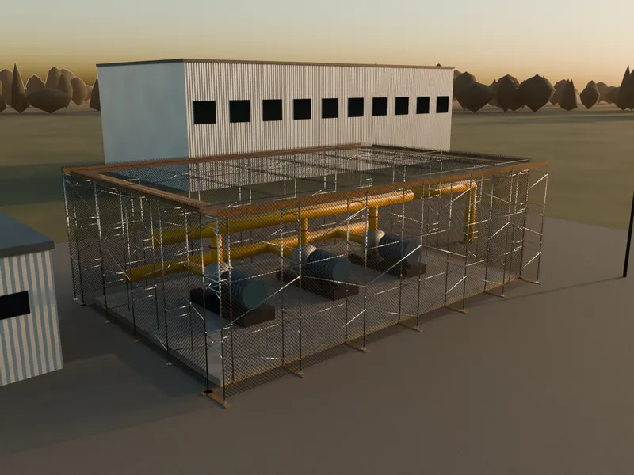
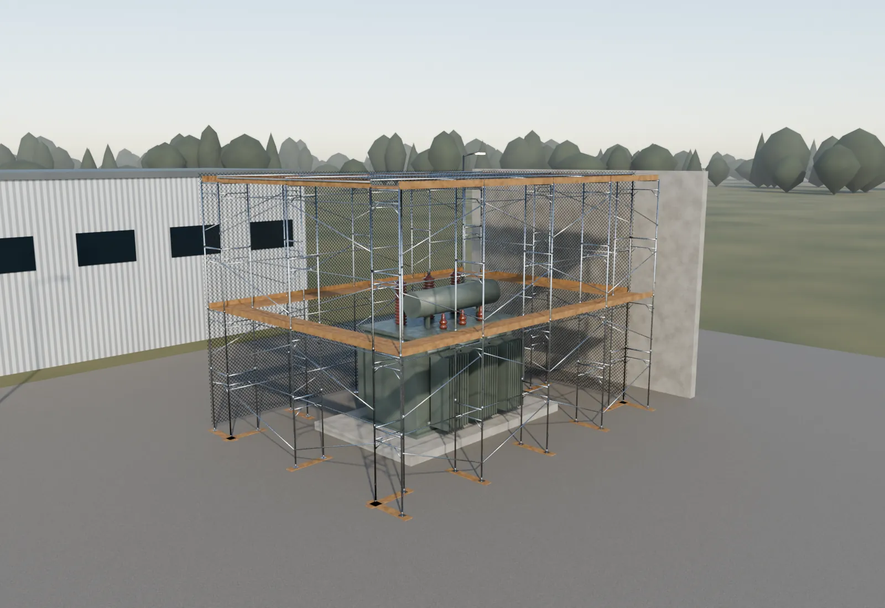
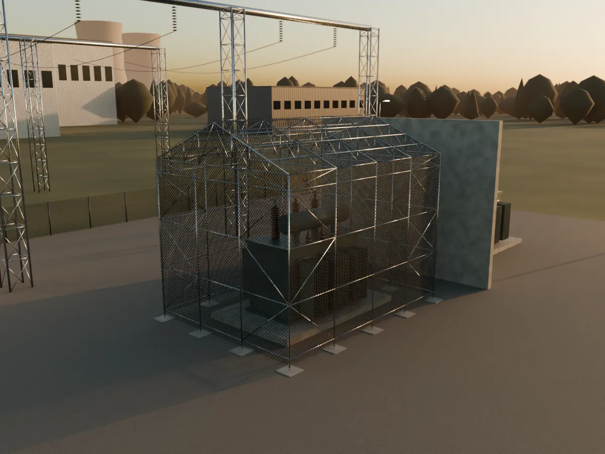
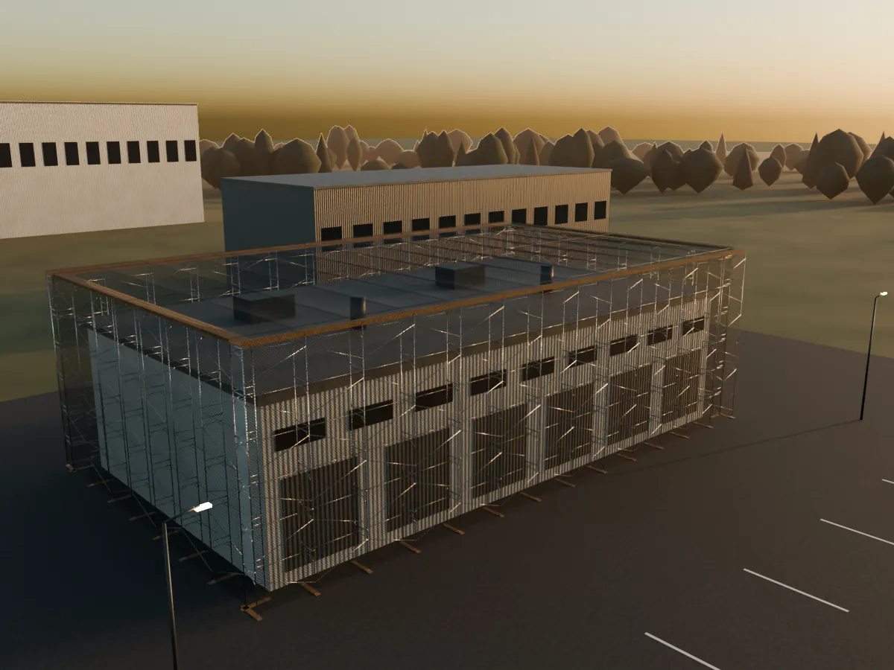

Долгая замена
Крупное энергетическое и технологическое оборудование часто изготавливают под заказ. Его замена может растянуться на длительный срок.

Пассивная защита промышленных объектов
Стальной каркас и защитная сетка над трансформаторами, резервуарами, насосными и кровлями. Расчёт, поставка и монтаж — в одном договоре.
Визуализация концепции. Не фотография объекта и не проектное решение.
Почему это важно
Крупное энергетическое и технологическое оборудование часто изготавливают под заказ. Его замена может растянуться на длительный срок.
Выход из строя трансформатора, насосной или резервуара затрагивает не один участок, а всю технологическую цепочку.
Пассивное сооружение монтируется до инцидента и не требует электропитания и операторов. Его характеристики подтверждаются проектом.
Что защищаем
Геометрия, доступ для обслуживания и условия площадки у каждого объекта свои. Поэтому каркас рассчитывается заново для каждой задачи.

Каркас вокруг силового оборудования с учётом изоляционных расстояний и доступа для обслуживания.

Отдельно стоящие сооружения над резервуарами и узлами налива с сохранением технологических проездов.
Защитный контур над кровлей и верхней частью стен, когда под крышей сосредоточено ценное оборудование.

Укрытие открытых площадок с агрегатами и обвязкой, без потери доступа для ремонта.
Все изображения на сайте — концептуальные 3D-визуализации. Состав и размеры сооружения определяются проектом.
Устройство

Каркасные системы
Выбор зависит от геометрии, условий монтажа и эксплуатации. Название системы само по себе не определяет защитные характеристики — их подтверждает проект.
| Критерий | Хомутовые | Чашечные | Клиновые |
|---|---|---|---|
| Лучше всего подходит | Сложная геометрия, выступы, коммуникации | Повторяющиеся участки | Пространственные каркасы |
| Компоновка | Индивидуальная, по месту | Повторяемые модульные элементы | Унифицированные соединения |
| Развитие контура | Учёт доступа для обслуживания | Поэтапная сборка и расширение | Замена элементов по регламенту |
Не знаете, какая система подойдёт? Опишите объект — поможем с выбором.
Этапы работы
Можно начать без готового проекта: с назначения объекта, региона и примерных размеров.
Уточняем задачу, расположение, размеры и исходные материалы.
На выходеПеречень исходных данных и план следующего шага
Определяем состав работ, конструктивную систему и предварительный бюджет.
На выходеКонцепция и предварительная стоимость по позициям
Готовим проект, согласуем спецификацию и график поставки.
На выходеПроект, спецификация и согласованный график
Выполняем работы в согласованном режиме и сдаём объект.
На выходеГотовое сооружение и согласованный комплект документов

Наш подход
Предварительная оценка
Три коротких шага, около минуты. Чертежи и точные размеры на этом этапе не нужны.
Это предварительная версия сайта. Форму можно заполнить и скачать как черновик заявки — данные никуда не отправляются.
Он ещё не отправлен. Скачайте его, чтобы сохранить введённые данные.
Ответы на вопросы
Не нашли свой вопрос? Задайте его помощнику.
Стоимость зависит от размеров, условий площадки, проектных требований и состава работ. Предварительный бюджет можно оценить после сбора исходных данных. Окончательная цена определяется по согласованному объёму.
Да. Начать можно с назначения объекта, региона, примерных размеров и описания задачи. Затем уточняются исходные данные и необходимый объём проектирования.
Выбор зависит от геометрии, условий монтажа и эксплуатации. Название системы само по себе не определяет защитные характеристики. Применимость конкретной конструкции подтверждается проектом.
Это можно определить после изучения площадки. Порядок доступа, этапность и необходимые технологические окна согласуются с эксплуатационной службой до начала монтажа.
Перечень согласуется в договоре с учётом проекта: расчётное обоснование, проектная и исполнительная документация, спецификации, документы на материалы и инструкции по эксплуатации.
Только характеристики, подтверждённые для конкретного решения при заданных условиях. Они фиксируются в проектной документации. Универсальную защиту от любых воздействий мы не заявляем.
